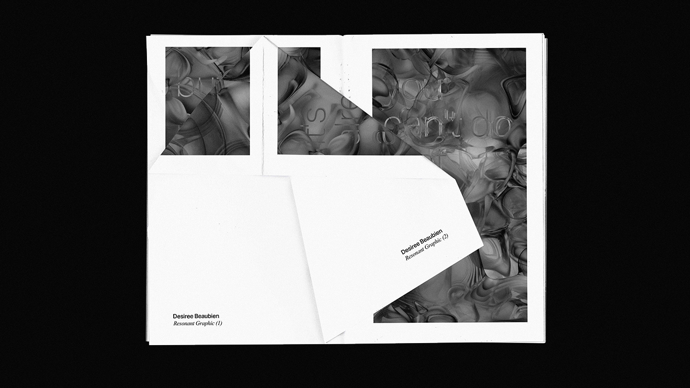
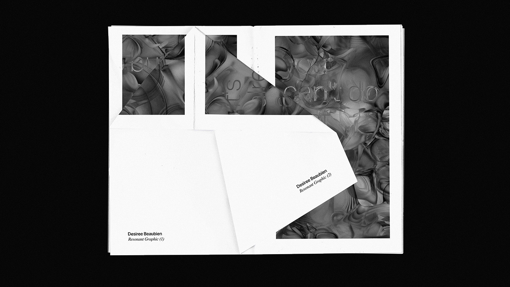
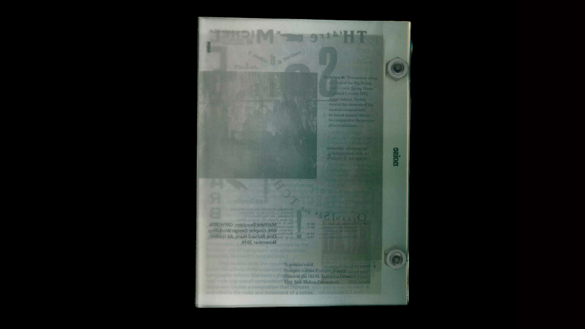
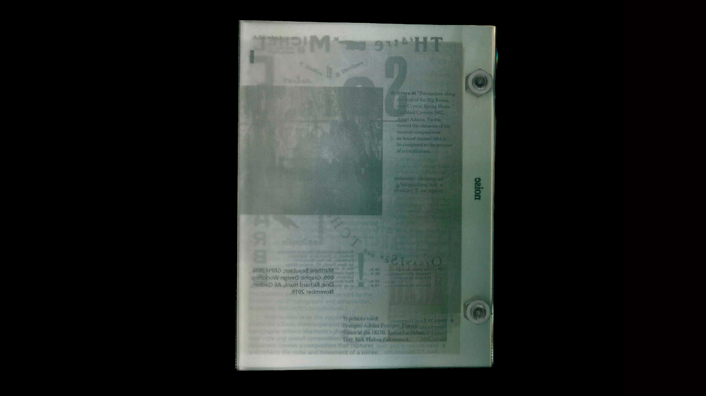

Resonant Zine
5.5" x 8.5" zine, digital print on bond
//Ongoing
This project follows the work of my thesis, (see Graphic Resonance). It is an ongoing collaboration with peers, friends, artists and designers, wherein I accept submissions of compositions that are developed with the use of Graphic Resonance.
Each issue is based on a tool developed by me, which I describe as 'instruments'. These instruments allow for—not the creation of musical compositions—but for the creation of graphic compositions through sound. Each composition is related to a certain sonic effect of the everyday.

 



Graphic Resonance
Interactive web-based design tool
//Ongoing
(under construction)
See the project here!
This is an ongoing project constituted by a collection of interactive graphic compositions. Each composition represents a certain sonic effect of the everyday.
Sound permeates our lives. It contains latent primordial information inherent to auditory scene analysis and, in turn, our survival. Sound carries with it emotional information, which allows us to understand one another sentimentally. It carries linguistic and semantic informaition which allows us to logically understand one another. It carries with it mnemonic information, which allows us to reminisce.
Sound has seemingly limitless dimensionality which can be difficult to parse. This project seeks to translate the sonic domain into the more familiar graphic domain. It seeks to harness the emotional, semantic, and mnemonic power of sound and apply it to graphic composition.
Furthermore, this project seeks to create a confluence and collaboration between the domain of the design author and the design consumer and, furthermore, between the design artifact and the environment in which it is immersed. Graphic Resonance seeks to create instruments—not for the composition of musical scores—but for the composition of graphic artifacts.
Sound Study
5.5" x 8.5" book, 11" x 17" posters
—November 2019
This project was a precursor to the development of my thesis work, (see Graphic Resonance). The project is a study in the visualization of ambient noise and experimental music.
The frequency spectrum is broken down into 16 bands, as represented by a grid of concentric ellipses. Each group of ellipses in the grid represent a different frequency band and the size of each ellipse represents the amplitude thereof.
These visualizations were printed in an 11" x 17" poster format and then later included in a book compiling each visualization.
A live version of this visualizer can be seen here.


Noise Publication
6" x 8" book, digital print acetate, acrylic
—October 2019
This project is one of the products of research for my thesis work, (see 'Graphic Resonance'). This book is a visualization of noise as well as a container of research surrounding noise and sound propagation in general.
The contents of the book are printed on acetate and bolt bound with acrylic bolts. The concept of noise is demonstrated through the use of acetate paper, presenting the reader all of the information in the book at a glance. The reader can cut throgh this noise with the "noise canceller" sheet.

 

Acoluthic
11" x 17" pamphlet, digital print and thermochromic screenprint on Durotone aged newsprint
—February 2019
This project began as an exploration of the word "acoluthic". Acoluthic is defined as "following immediately (as a visual afterimage) upon the primary activity aroused by a stimulus." Think about the image you get in your eyes after staring at a bright light. I thought of this word in the context of monuments and artifacts of ancient civilizations. These are essentially afterimages of the civilization that created them.
Since 2014 the Islamic State has perpetrated the deliberate destruction of cultural heritage in Syria. They loot and destroy artifacts and monuments in museums and historical sites. Palmyra saw monumental losses from the actions of ISIS.
I created an educational pamphlet outlining the Islamic State's attack on culture in Syria. I used silhouette illustrations of the ancient Roman tetrapylon and triumphal arch as symbols of this loss. When one touches the pamphlet, the silhouettes which are printed in heat sensitive ink, reveal the monuments in their current state, leaving just an afterimage of what once was. A message contextualizing this loss is also revealed.


Institute for Creative Exchange
Logo design and animation
//January 2019
This project was one of many completed as part of a Student Designer placement with Artscape Youngplace and select organizations within. This documents part of a larger rebranding project developed with two other designers Institute for Creative Exchange, (ICE). ICE is a diverse multidisciplinary and multimedia art platform for artists to collaborate and share ideas. We found that this was not being supported by their visual identity. Therefore, we created multiple directions that we thought communicated the organization's values, of which this direction was selected.
The logo is extremely variable in terms of form and colour. This variability allows ICE to appeal to different demographics and contexts. The logo can be contorted from its formal state into a playful distortions. these distortions represent ICE's goal to maintain dialog and diversity of perpective in the increasingly polarized Americas.
Evolution of the Letterform
Web page
—November 2018
This is an [interactive web experience] that takes you on a brief journey through the history of western typography. A metamorphosis from the earliest forms of mark making on the cave walls of the Lascaux caves in Northern France to the contemporary typography of the web.
Visual Onomatopoeia
Three kinetic typography studies, 6-8 seconds.
—March 2018
These typographic animations demonstrate a study in the visual expression of words. Corrupt, decay, and distortion.